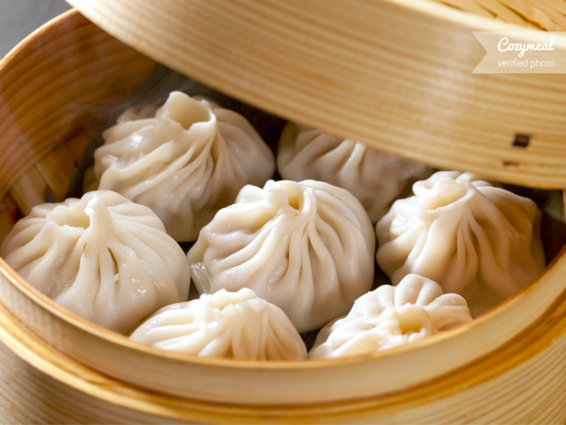

Pork Soup Dumpling

Soup dumplings cooked to perfection
Ingredients
- ½ lb pork skin
- 1 lb (450g) pork neck bones
- Water
- Garlic
- Ginger
- Salt
- Soy Sauce
- Flower
- Gelatin
- whole onion
- Prepare the chicken stock jelly cubes
- Put pork into food processor for 30-60 seconds
- Add pork and spices into a mixing bowl and mix together well
- Prepare lightly dusted clean work surface
- Roll each piece into a round disc about 3 – 3 ¼ inches diameter
- Prepare bamboo steamer
- Place 1 tabelspoon of filling in each bun
- Place the buns in the lined steamer basket, about 1 1/2 – 2 inches apart
- Steam in a metal steamer pot, let it steam over high heat for 8 minutes